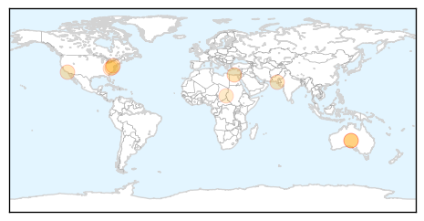
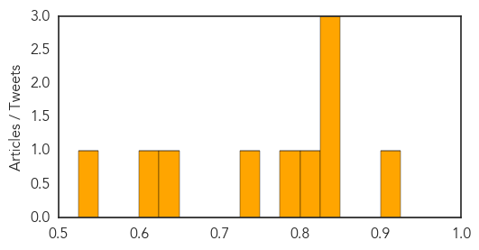

Measles
30-Day Web Trend
2 alerts, 0 warnings

30-Day Twitter Trend
0 alerts, 0 warnings

Article Locations
Article Confidences
Top Articles:
- 0.903
- Alarm over measles surge
- 0.843
- Health officials confirm second D.C.-area measles case
- 0.841
- Va. health officials report second confirmed measles case, warn of potential exposures
- 0.828
- International SOS Offers Advice in South East Asia after Sharp Rise in Measles Cases
- 0.814
- Why are vaccination rates dropping?
- 0.779
- Measles patients with complications being admitted to CHK
- 0.735
- Regional alert issued after second measles case reported
- 0.631
- Aid agencies working to improve conditions for S. Sudan refugees in Ethiopia - Ethiopia
- 0.614
- Virginia Measles Exposure Might Have Extended To Bethesda
- 0.530
- A normal reaction?: Six more children faint during measles drive
Top Tweets:
-
No tweets found for May 21, 2014
Ebola
30-Day Web Trend
0 alerts, 0 warnings

30-Day Twitter Trend
0 alerts, 0 warnings

Article Locations

Article Confidences

Top Articles:
Top Tweets:
-
No tweets found for May 21, 2014